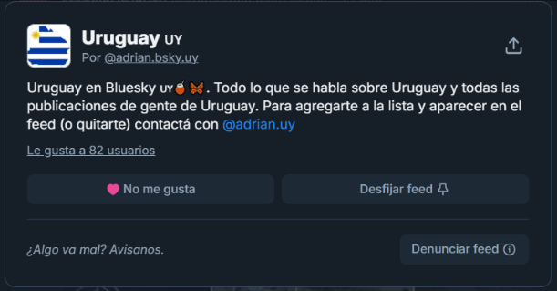
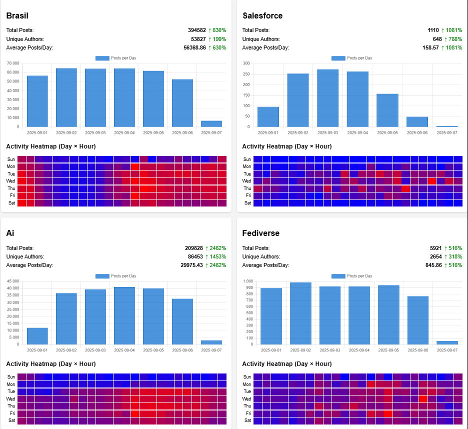

Context
Bluesky Custom Feeds are one of the most interesting decentralization patterns in the AT Protocol ecosystem. They allow users to choose, inspect and build alternative timelines instead of depending only on a single opaque ranking algorithm.
Most social platforms sit between two extremes: black-box recommendation engines or purely chronological timelines. Bluesky custom feeds create a middle ground where algorithms can be explicit, community-oriented and replaceable.
This project started as an experiment to understand what makes a feed useful. It later evolved into regional feeds, technology feeds and lightweight analytics to measure feed activity and growth.
Project Focus
- Research: Studied how AT Protocol repositories, records and XRPC calls work.
- Implementation: Built the Uruguay custom feed using Eddy Luten’s post as an initial reference.
- Framework migration: Migrated to Bossett’s framework to support multiple feeds more effectively.
- Stream processing: Shifted firehose processing to Jetstream.
- Optimization: Improved caching, query performance and endpoint stability while adding new feeds.
- Analytics: Designed dashboards to visualize feed growth, posting frequency and user activity.
Architecture
The system is structured as a modular Node.js backend running in Docker and connected to MongoDB. Each feed is powered by an algorithm module that retrieves and filters posts from Bluesky through Jetstream, then stores processed metadata for serving feeds and analytics.
The goal was to keep the implementation simple enough to maintain, while still separating feed logic, stream processing, analytics and persistence.
Deployment Pipeline
Code and deployments follow a streamlined delivery pipeline. Source code lives in GitHub, builds and checks run through GitHub Actions, and deployment is delivered to a DigitalOcean App.
Custom Feeds
The feeds are organized into two main categories. The first group is regional: Uruguay, Argentina, Río de la Plata and Brazil. The Brazil feed is focused on Brazilian Portuguese content.
The second group is technology-oriented: Fediverse, Salesforce and a broader AI feed.

Data Dashboards
To better understand feed performance, I built dashboards that visualize post counts, unique authors, posting frequency and growth trends. The same dashboards help identify activity patterns, engagement changes and top contributors.

Takeaways
This project made the value of decentralized social protocols more concrete. AT Protocol enables new ways to filter, manage and experiment with large-scale social data without depending on a single platform-controlled timeline.
From a technical perspective, the project strengthened my understanding of TypeScript, MongoDB, stream processing, DigitalOcean deployment and AT Protocol concepts. From a product perspective, it was an exercise in transparent, user-driven filtering.